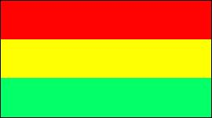
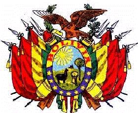

Bolivia
|  |  |
Letra del himno nacionalhimno_23.
Información general
Nombre oficial: República de Bolivia
Área: 1 098 581 km²
Costas: No tiene costas marítimas
División política:9 Departamentos
Provincia Capital
- Beni Trinidad
- Cochabamba Cochabamba
- Chuquisaca Sucre
- La Paz La Paz
- Oruro Oruro
- Pando Cobija
- Potosí Potosí
- Santa Cruz Santa Cruz de la Sierra
- Tarija Tarija
Unidad monetaria: Boliviano
1 Boliviano = 100 centavos
Idiomas: Español, quechua, aimará y tupiguaraní (oficiales); guaraní (no oficial). Algunas comunidades de origen extranjero hablan también japonés, portugués y unos cuarenta más
Fiesta nacional: 6 de agosto, Día de la Independencia
Gentilicio: Boliviano
Hora oficial: GMT -4 horas (normal/verano)
Miembro de: ONU, OEA, ALADI, Pacto Andino, Tratado Amazónico
Curiosidades
La Paz situada en la región centro-occidental de Bolivia, a 3 627 m de altura, es la capital más alta del mundo. El aeropuerto internacional de El Alto a 4 085 m de altura, es también el más elevado del mundo.
En el flanco nororiental de Bolivia están los "yungas", tierras intermedias entre el altiplano y los llanos dedicados principalmente al pastoreo y la ganadería.
El lago Titicaca, en la altiplanicie de los Andes, tiene una superficie de 8 300 km², contiene numerosas islas y es navegable por embarcaciones de gran calado. La frontera entre Perú y Bolivia lo atraviesa de norte a sur.
Bolivia ha sufrido 190 golpes de Estado después de la independencia.
Perfil Ecónomico
Perfil Demográfico
Población: 9.427.219 hab.
La población comprende un elevado número de personas de ascendencia amerindia. Las que conservan su lengua y costumbres son más de la mitad del total.
Densidad de población: 7,7 hab/km².
Fuente: INE http://www.ine.gov.bo/cgi-bin/PobComunitLocalidadesADAxx.exe
http://www.ine.gov.bo/asp/indicadores.asp?TI=1
Perfil Cultural
Alfabetismo: 86%
Religión:
- Católicos: 89,5%
- Protestantes: 3,7%
- No religiosos: 2,0%
- Religiones tribales 1,8%
- Otros: 3,0%
Algunas figuras notables:
- Nataniel Aguirre (1843-1888). Poeta, novelista y dramaturgo
- Alcides Arguedas (1879-1946). Escritor
- Jaime Laredo (1942). Violinista
- Gabriel René Moreno (1834-1908). Historiador
- Melchor Pérez de Holguín (1665-1724). Pintor
- Franz Tamayo (1879-1956). Escritor, periodista y diputado
Lugares declarados patrimonio mundial por la UNESCO
- Potosí (Ciudad minera).
- Misiones jesuíticas de Chiquitas.
- Sucre (Ciudad histórica).
Sistema de Gobierno
Constitución vigente: 1967 (última modificación 2004)
Sistema ejecutivo: Presidente y Vicepresidente, elegidos por sufragio directo para un término de cuatro años, no reelegibles para el período inmediato. Gabinete de Ministros.
Sistema legislativo: Senado (veintisiete miembros, elegidos por cuatro años) y Cámara de Diputados (130 miembros, elegidos por cuatro años).
Sistema judicial: Corte Suprema (doce magistrados), cortes de Distritos y juzgados.
Gobierno subdivisional: Cada departamento se subdivide en provincias y cantones, y está gobernado por un prefecto nombrado por el Presidente de la República.
Aproximación histórica
Situada en el medio del continente y lejos de todos los mares se encuentra Bolivia. Su territorio colinda con Brasil, Paraguay, Argentina, Chile y Perú.
Desde 500 años a.C. se desarrollaron en el altiplano boliviano algunas culturas agroalfareras que culminarían con la cultura del Tiahuanaco, notable por sus construcciones ciclópeas de piedra labrada. Los quechua y aimará habitan el altiplano boliviano en el siglo XII, cuando son dominados por el imperio Inca. La conquista española se inicia en 1530 y los indios son obligados a trabajar en las minas del Alto Perú, hoy Bolivia.
En 1809 se produce en esta región uno de los primeros movimientos emancipadores. En 1825, después de la victoria de Ayacucho, Simón Bolívar y Antonio José de Sucre proclaman la independencia de la "República de Bolívar", mas tarde llamada Bolivia, en homenaje al libertador y cuyo primer presidente fue Sucre.
En La Guerra del Pacífico (1879-1884) Bolivia pierde ante Chile su único acceso al mar. En la Guerra del Chaco (1932-1935) Bolivia pierde el territorio con Paraguay. Sigue luego un período de gobiernos militares que no resuelve los grandes problemas económicos del país. En 1952 una revolución popular liderada por Víctor Paz Estenssoro, restablece el poder civil, nacionaliza las minas, promueve la reforma agraria y purga las Fuerzas Armadas. En 1964 un golpe militar lleva al poder al general René Barrientos y cambia parte de las reformas de 1952. En 1967 tropas bolivianas con el apoyo norteamericano capturan y ejecutan al líder guerrillero Ernesto "Che" Guevara.
En Bolivia se pueden distinguir dos regiones: el Altiplano y el Oriente. El Altiplano andino consiste en una meseta de 380 metros de altitud y en él se alternan tanto altos relieves, como valles interiores, como el de Cochabamba y una cuenca cerrada en que se encuentra el lago Titicaca a 3 810 metros sobre el nivel del mar. En la región oriental descienden valles que fluyen hacía la llanura que conforma el oriente boliviano.
La gran inestabilidad política, con 190 golpes de estado, después de su independencia, ha incidido significativamente limitando el crecimiento económico de Bolivia.
La minería renace en el país a finales del siglo XIX, gracias a la gran demanda internacional de estaño. Bolivia posee grandes recursos minerales, como estaño, plomo, plata, oro, cobre, tungsteno y petróleo.
Su capital La Paz, esta circundada por las imponentes alturas de la cordillera Real, entre las que se destaca el nevado del Illimani con 6 525 metros de altitud.
«-- ir al comienzo
«-- regresar